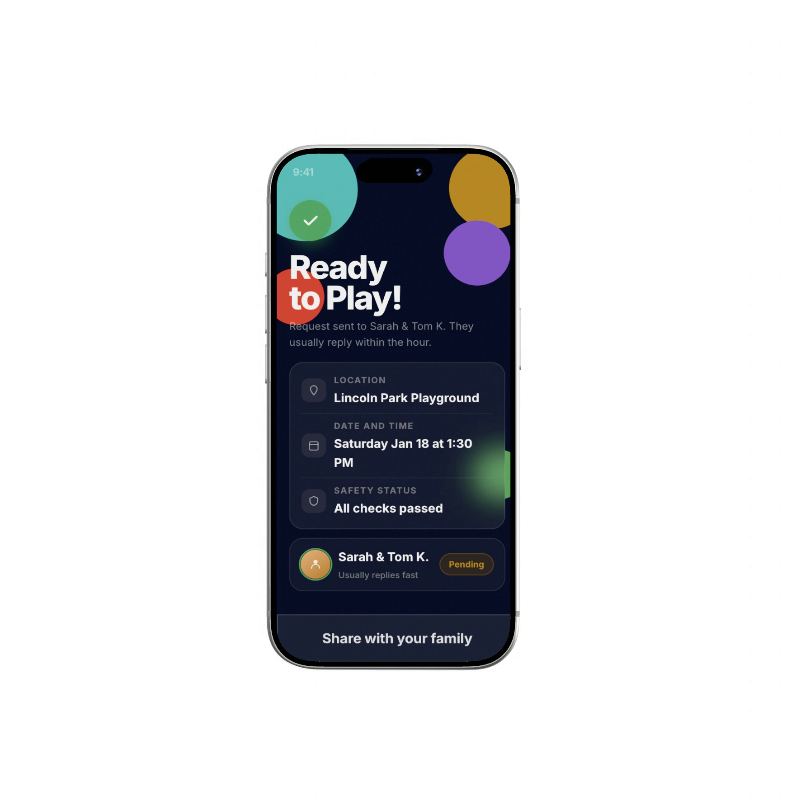
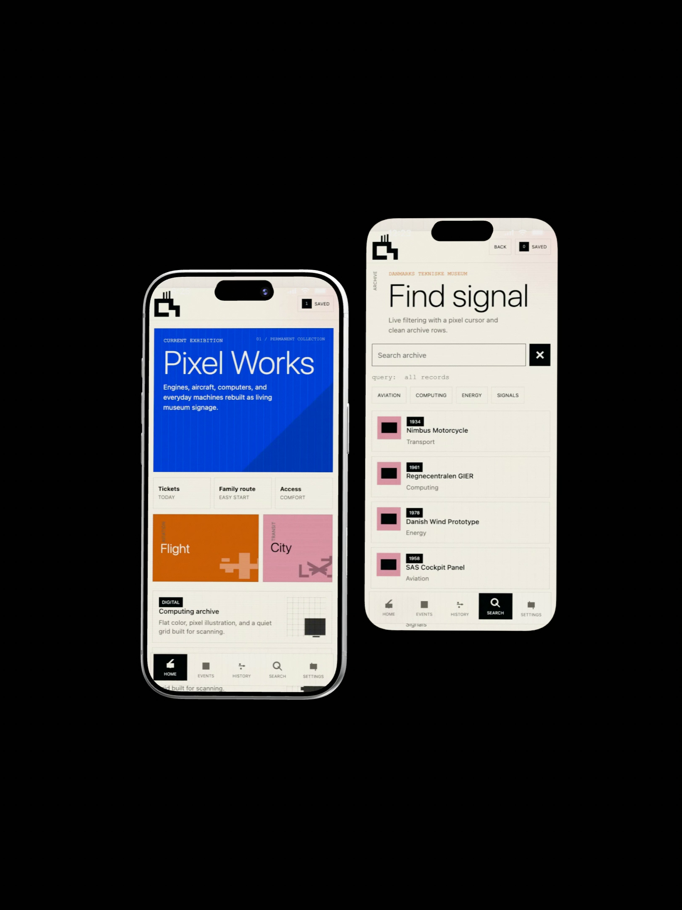
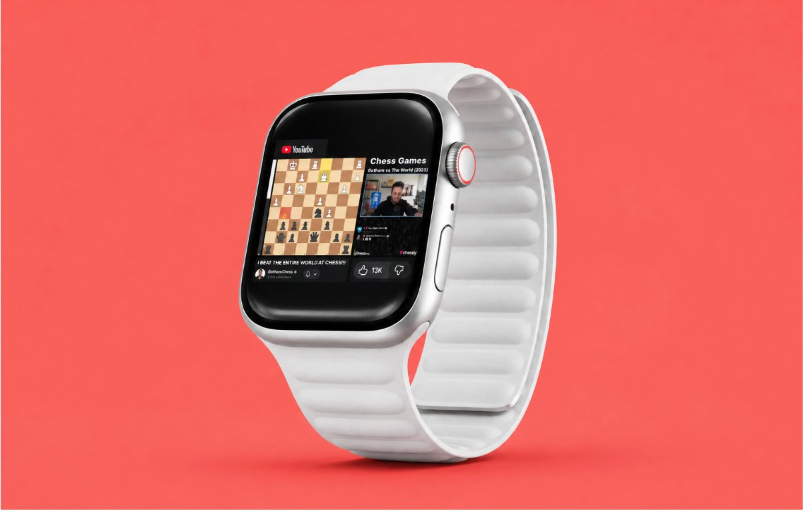

↗
PREMIER · 2026
Full site redesign & rebrand, live in production.

↗
Safeplay · 2025
Playdate-vetting app, iOS — 6/6 usability testers succeeded in 87 seconds.

↗
DTM Museum · 2026
Museum app prototype, coded solo — its custom timeline was singled out in review.

↗
YouTube Watch · 2025
watchOS concept, redesigned around the Digital Crown instead of touch.

↗
The Gallery · 2026
A walkable 3D room of 19 songs — step into any one and it becomes its own theater.